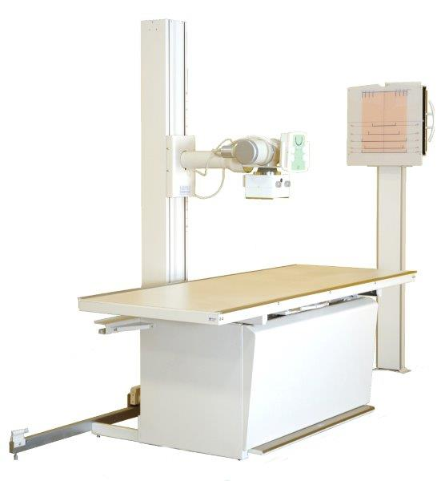

Raio X
Contrastado

O que é?
O Raio X contrastado é um exame de imagem que utiliza substâncias de contraste (iodado ou baritado) para melhor visualização de estruturas internas que não seriam visíveis no Raio X convencional. O contraste permite destacar órgãos, vasos sanguíneos e outras estruturas, proporcionando imagens mais detalhadas para diagnóstico.
Indicações
Este exame é indicado para avaliar:
- Sistema digestivo (esôfago, estômago, intestinos)
- Sistema urinário (rins, ureteres, bexiga)
- Vasos sanguíneos (angiografias)
- Articulações (artrografias)
- Medula espinhal (mielografia)
- Detecção de tumores e malformações
Tipos de Contraste
| Tipo | Uso | Via de Administração |
|---|---|---|
| Bário | Exames do trato digestivo | Oral ou retal |
| Iodado | Vasos sanguíneos e sistema urinário | Intravenoso |
| Gases | Duplo contraste (com bário) | Oral |
Preparo Necessário
- Jejum: 6-8 horas para exames abdominais
- Dieta leve: No dia anterior para exames gastrointestinais
- Laxantes: Pode ser necessário para limpeza intestinal
- Hidratação: Beber bastante água após o exame para eliminar o contraste
- Medicações: Informar sobre uso de metformina (para diabéticos)
- Alergias: Relatar histórico de alergias, especialmente a iodo
Como é realizado?
- Administração do contraste (via oral, retal ou intravenosa)
- Posicionamento adequado na mesa de exame
- Obtenção das imagens em diferentes ângulos
- Pode ser necessário mudar de posição durante o exame
- Duração variável (15-60 minutos dependendo do tipo)
Cuidados após o exame
- Beber bastante água para eliminar o contraste
- Observar possíveis reações alérgicas tardias
- Retomar alimentação gradualmente
- Amamentação: suspender por 24-48 horas se usado contraste iodado
Importante!
Informe nossa equipe se você tem: alergias conhecidas, problemas renais, diabetes, asma ou se existe possibilidade de gravidez.